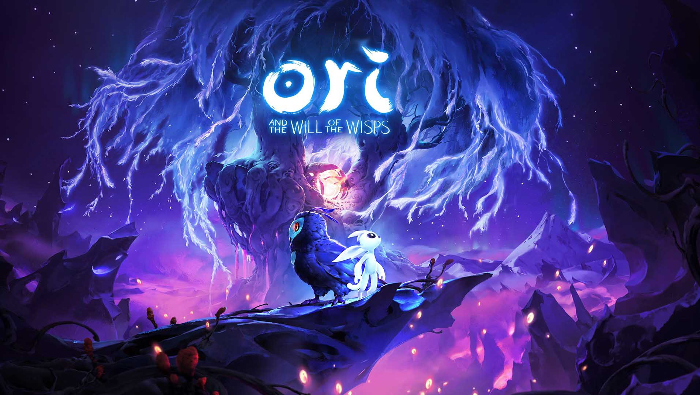
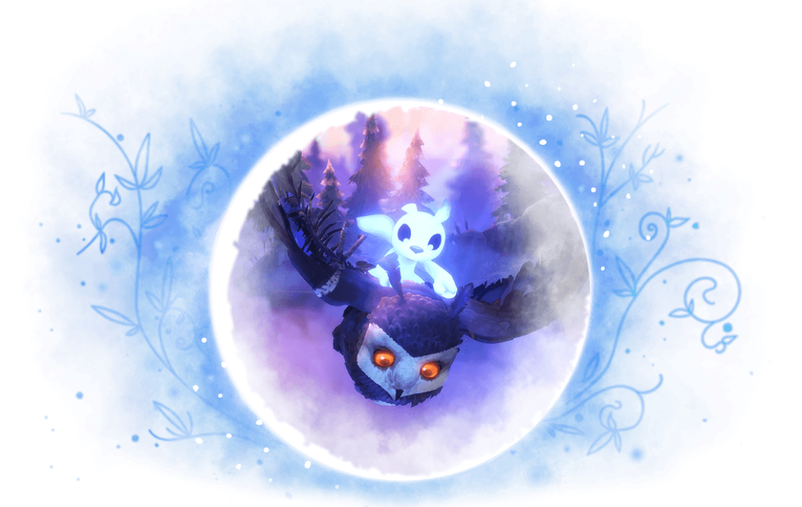

2020
Március 11
Az Ori
and the Will of the Wisps már elérhető Xbox Game Pass-szal, valamint Xbox One-ra, Windows 10 PC-re és
Steamre
Trailer lejátszása
Rövid ismertető
Tesztalanyunk az elődjéhez hasonlóan a platformer és a metroidvania
műfajt keveri. Az előbbi ugye azt jelenti, hogy oldalnézetből irányítjuk a karakterünket, aki mindenféle
akrobatikus mutatványokkal küzdi le a rá váró akadályokat, és a játékmenetnek alapvető része a harc is.